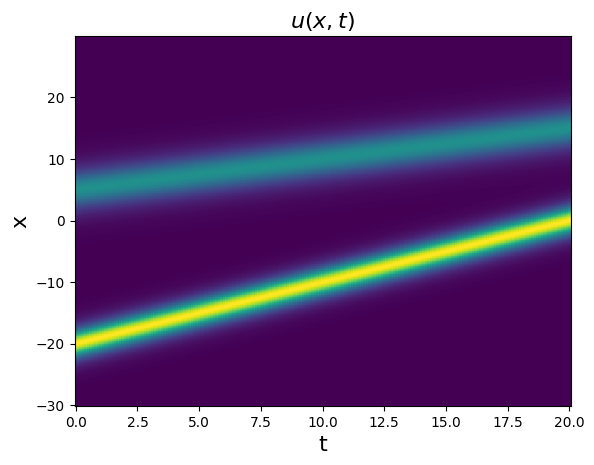
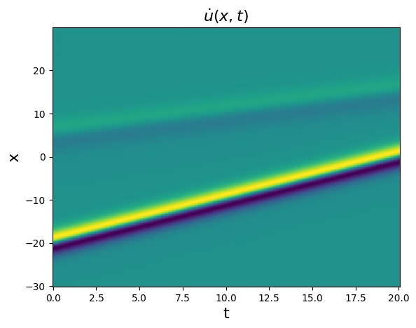
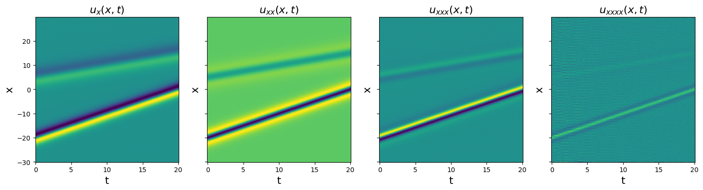
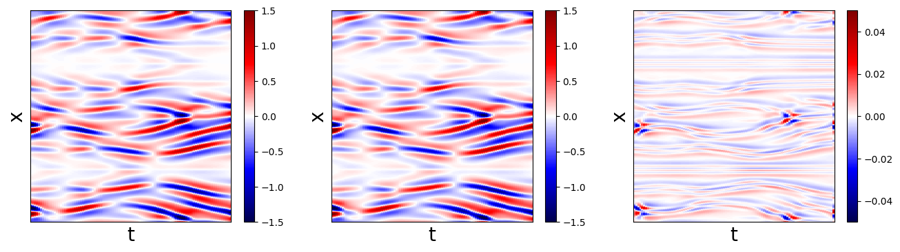
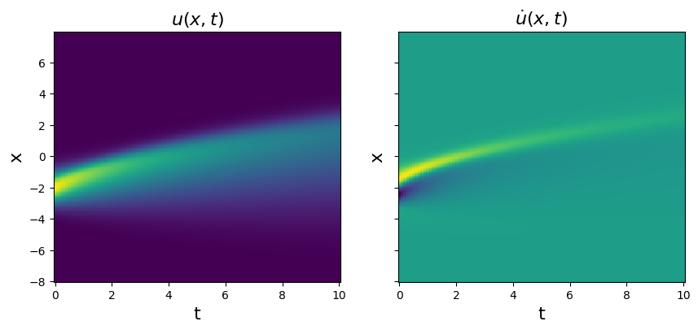
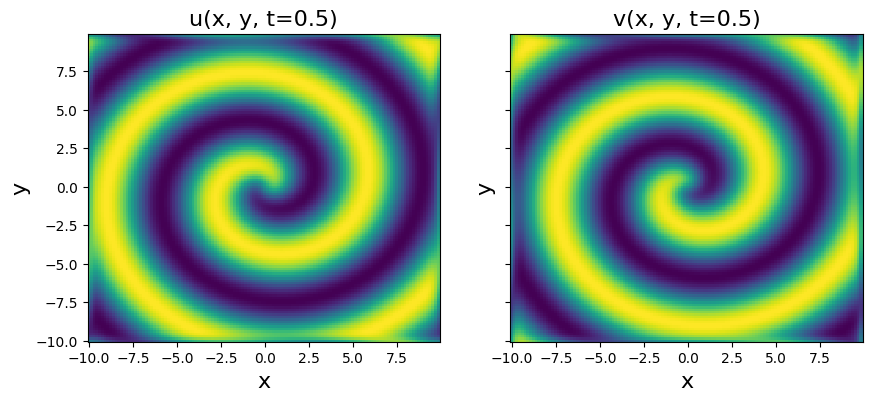
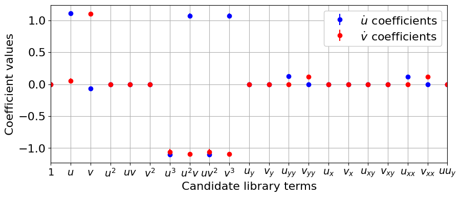
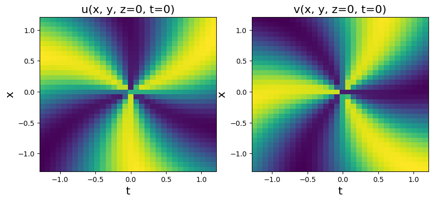
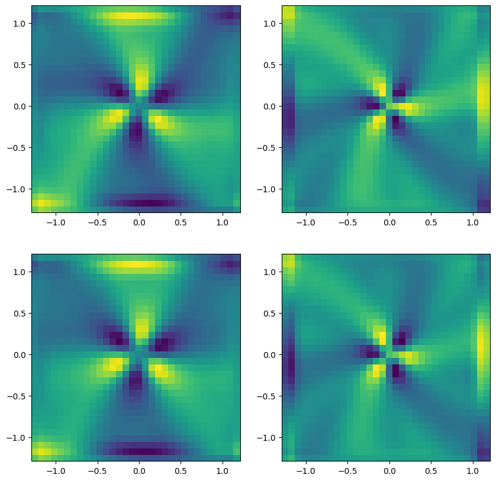

PDEFIND Feature Overview
SINDy was originally used to discover systems of ordinary differential equations (ODEs) but was quickly extended to search partial differential equations (PDEs), since many systems exhibit dependence in both space and time.
This notebook provides a simple overview of the PDE functionality of PySINDy, following the examples in the PDE-FIND paper (Rudy, Samuel H., Steven L. Brunton, Joshua L. Proctor, and J. Nathan Kutz. “Data-driven discovery of partial differential equations.” Science Advances 3, no. 4 (2017): e1602614.). Jupyter notebook written by Alan Kaptanoglu.
An interactive version of this notebook is available on binder 
[1]:
import matplotlib.pyplot as plt
from mpl_toolkits.mplot3d import Axes3D
import numpy as np
from sklearn.linear_model import Lasso
from scipy.io import loadmat
from sklearn.metrics import mean_squared_error
from scipy.integrate import solve_ivp
import pysindy as ps
# Ignore matplotlib deprecation warnings
import warnings
warnings.filterwarnings("ignore", category=UserWarning)
# Seed the random number generators for reproducibility
np.random.seed(100)
integrator_keywords = {}
integrator_keywords['rtol'] = 1e-12
integrator_keywords['method'] = 'LSODA'
integrator_keywords['atol'] = 1e-12
Define Algorithm 2 from Rudy et al. (2017)
Algorithm 2 is implemented here for scanning the thresholds passed to our STLSQ optimizer (which actually defaults to Ridge Regression with the \(l_0\) norm). This tends to result in stronger performance on the below examples. Note that Algorithm 2 is actually in the supplementary materials of the PDE-FIND paper. We don’t use this function in the below examples but provide it so users can apply it elsewhere.
[2]:
# Algorithm to scan over threshold values during Ridge Regression, and select
# highest performing model on the test set
def rudy_algorithm2(
x_train,
x_test,
t,
pde_lib,
dtol,
alpha=1e-5,
tol_iter=25,
normalize_columns=True,
optimizer_max_iter=20,
optimization="STLSQ",
):
# Do an initial least-squares fit to get an initial guess of the coefficients
optimizer = ps.STLSQ(
threshold=0,
alpha=0,
max_iter=optimizer_max_iter,
normalize_columns=normalize_columns,
ridge_kw={"tol": 1e-10},
)
# Compute initial model
model = ps.SINDy(feature_library=pde_lib, optimizer=optimizer)
model.fit(x_train, t=t)
# Set the L0 penalty based on the condition number of Theta
l0_penalty = 1e-3 * np.linalg.cond(optimizer.Theta)
coef_best = optimizer.coef_
# Compute MSE on the testing x_dot data (takes x_test and computes x_dot_test)
error_best = model.score(
x_test, metric=mean_squared_error, squared=False
) + l0_penalty * np.count_nonzero(coef_best)
coef_history_ = np.zeros((coef_best.shape[0],
coef_best.shape[1],
1 + tol_iter))
error_history_ = np.zeros(1 + tol_iter)
coef_history_[:, :, 0] = coef_best
error_history_[0] = error_best
tol = dtol
# Loop over threshold values, note needs some coding
# if not using STLSQ optimizer.
for i in range(tol_iter):
if optimization == "STLSQ":
optimizer = ps.STLSQ(
threshold=tol,
alpha=alpha,
max_iter=optimizer_max_iter,
normalize_columns=normalize_columns,
ridge_kw={"tol": 1e-10},
)
model = ps.SINDy(feature_library=pde_lib, optimizer=optimizer)
model.fit(x_train, t=t)
coef_new = optimizer.coef_
coef_history_[:, :, i + 1] = coef_new
error_new = model.score(
x_test, metric=mean_squared_error, squared=False
) + l0_penalty * np.count_nonzero(coef_new)
error_history_[i + 1] = error_new
# If error improves, set the new best coefficients
if error_new <= error_best:
error_best = error_new
coef_best = coef_new
tol += dtol
else:
tol = max(0, tol - 2 * dtol)
dtol = 2 * dtol / (tol_iter - i)
tol += dtol
return coef_best, error_best, coef_history_, error_history_
Using the new PDE library functionality is straightforward
The only required parameters are the functions to apply to the data (library_functions) and the spatial points where the data was sampled (spatial_grid). However, providing function names (function_names) greatly improves readability, and there are a number of other optional parameters to pass to the library.
[3]:
# basic data to illustrate the PDE Library
t = np.linspace(0, 10)
x = np.linspace(0, 10)
u = ps.AxesArray(np.ones((len(x) * len(t), 2)),{"ax_coord":1})
# Define PDE library that is quadratic in u,
# and second-order in spatial derivatives of u.
# library_functions = [lambda x: x, lambda x: x * x]
# library_function_names = [lambda x: x, lambda x: x + x]
pde_only_lib = ps.PDELibrary(derivative_order=2, spatial_grid=x)
poly_lib = ps.PolynomialLibrary(degree=2, include_bias=False)
pde_lib = (
poly_lib
+ pde_only_lib
+ (poly_lib * pde_only_lib)
).fit([u])
print("2nd order derivative library: ")
print(pde_lib.get_feature_names())
# Now put in a bias term and try 4th order derivatives
pde_only_lib = ps.PDELibrary(derivative_order=4, spatial_grid=x)
poly_lib = ps.PolynomialLibrary(degree=2, include_bias=False)
bias_lib = ps.PolynomialLibrary(degree=0, include_bias=True)
pde_lib = (
bias_lib
+ poly_lib
+ pde_only_lib
+ (poly_lib * pde_only_lib)
).fit([u])
print("4th order derivative library: ")
print(pde_lib.get_feature_names())
# No multiplication between libraries:
pde_lib = (bias_lib + poly_lib + pde_only_lib).fit([u])
print("4th order derivative library, no mixed terms: ")
print(pde_lib.get_feature_names())
2nd order derivative library:
['x0', 'x1', 'x0^2', 'x0 x1', 'x1^2', 'x0_1', 'x1_1', 'x0_11', 'x1_11', 'x0 x0_1', 'x0 x1_1', 'x0 x0_11', 'x0 x1_11', 'x1 x0_1', 'x1 x1_1', 'x1 x0_11', 'x1 x1_11', 'x0^2 x0_1', 'x0^2 x1_1', 'x0^2 x0_11', 'x0^2 x1_11', 'x0 x1 x0_1', 'x0 x1 x1_1', 'x0 x1 x0_11', 'x0 x1 x1_11', 'x1^2 x0_1', 'x1^2 x1_1', 'x1^2 x0_11', 'x1^2 x1_11']
4th order derivative library:
['1', 'x0', 'x1', 'x0^2', 'x0 x1', 'x1^2', 'x0_1', 'x1_1', 'x0_11', 'x1_11', 'x0_111', 'x1_111', 'x0_1111', 'x1_1111', 'x0 x0_1', 'x0 x1_1', 'x0 x0_11', 'x0 x1_11', 'x0 x0_111', 'x0 x1_111', 'x0 x0_1111', 'x0 x1_1111', 'x1 x0_1', 'x1 x1_1', 'x1 x0_11', 'x1 x1_11', 'x1 x0_111', 'x1 x1_111', 'x1 x0_1111', 'x1 x1_1111', 'x0^2 x0_1', 'x0^2 x1_1', 'x0^2 x0_11', 'x0^2 x1_11', 'x0^2 x0_111', 'x0^2 x1_111', 'x0^2 x0_1111', 'x0^2 x1_1111', 'x0 x1 x0_1', 'x0 x1 x1_1', 'x0 x1 x0_11', 'x0 x1 x1_11', 'x0 x1 x0_111', 'x0 x1 x1_111', 'x0 x1 x0_1111', 'x0 x1 x1_1111', 'x1^2 x0_1', 'x1^2 x1_1', 'x1^2 x0_11', 'x1^2 x1_11', 'x1^2 x0_111', 'x1^2 x1_111', 'x1^2 x0_1111', 'x1^2 x1_1111']
4th order derivative library, no mixed terms:
['1', 'x0', 'x1', 'x0^2', 'x0 x1', 'x1^2', 'x0_1', 'x1_1', 'x0_11', 'x1_11', 'x0_111', 'x1_111', 'x0_1111', 'x1_1111']
/home/jake/github/sindy-addl-examples/env12/lib/python3.12/site-packages/pysindy/utils/_axes.py:126: AxesWarning: 1 axes labeled for array with 2 axes
warnings.warn(
Test PDE functionality on the 1D kdV equation
The kdV equation is \(u_t = -6uu_x - u_{xxx}\), and the data we will be investigating is a two-soliton solution.
[4]:
# Load the data stored in a matlab .mat file
kdV = loadmat('data/kdv.mat')
t = np.ravel(kdV['t'])
x = np.ravel(kdV['x'])
u = np.real(kdV['usol'])
dt = t[1] - t[0]
dx = x[1] - x[0]
# Plot u and u_dot
plt.figure()
plt.pcolormesh(t, x, u)
plt.xlabel('t', fontsize=16)
plt.ylabel('x', fontsize=16)
plt.title(r'$u(x, t)$', fontsize=16)
plt.figure()
u_dot = ps.FiniteDifference(axis=1)(u, t=t)
plt.pcolormesh(t, x, u_dot)
plt.xlabel('t', fontsize=16)
plt.ylabel('x', fontsize=16)
plt.title(r'$\dot{u}(x, t)$', fontsize=16)
plt.show()


Test spatial derivative computations
[5]:
dx = x[1] - x[0]
ux = ps.FiniteDifference(d=1, axis=0,
drop_endpoints=False)(u, x)
uxx = ps.FiniteDifference(d=2, axis=0,
drop_endpoints=False)(u, x)
uxxx = ps.FiniteDifference(d=3, axis=0,
drop_endpoints=False)(u, x)
uxxxx = ps.FiniteDifference(d=4, axis=0,
drop_endpoints=False)(u, x)
# Plot derivative results
plt.figure(figsize=(18, 4))
plt.subplot(1, 4, 1)
plt.pcolormesh(t, x, ux)
plt.xlabel('t', fontsize=16)
plt.ylabel('x', fontsize=16)
plt.title(r'$u_x(x, t)$', fontsize=16)
plt.subplot(1, 4, 2)
plt.pcolormesh(t, x, uxx)
plt.xlabel('t', fontsize=16)
plt.ylabel('x', fontsize=16)
ax = plt.gca()
ax.set_yticklabels([])
plt.title(r'$u_{xx}(x, t)$', fontsize=16)
plt.subplot(1, 4, 3)
plt.pcolormesh(t, x, uxxx)
plt.xlabel('t', fontsize=16)
plt.ylabel('x', fontsize=16)
ax = plt.gca()
ax.set_yticklabels([])
plt.title(r'$u_{xxx}(x, t)$', fontsize=16)
plt.subplot(1, 4, 4)
plt.pcolormesh(t, x, uxxxx)
plt.xlabel('t', fontsize=16)
plt.ylabel('x', fontsize=16)
ax = plt.gca()
ax.set_yticklabels([])
plt.title(r'$u_{xxxx}(x, t)$', fontsize=16)
plt.show()

Note that the features get sharper and sharper in the higher-order derivatives, and any noise will be significantly amplified. Now we fit this data, and the algorithms struggle a bit.
[6]:
u = u.reshape(len(x), len(t), 1)
# Define PDE library that is quadratic in u, and
# third-order in spatial derivatives of u.
# library_functions = [lambda x: x, lambda x: x * x]
# library_function_names = [lambda x: x, lambda x: x + x]
pde_only_lib = ps.PDELibrary(derivative_order=3, spatial_grid=x, diff_kwargs={'is_uniform': True})
bias_lib = ps.PolynomialLibrary(degree=0, include_bias=True)
pde_lib = (
pde_only_lib
* ps.PolynomialLibrary(degree=2,include_bias=False)
+ pde_only_lib
+ bias_lib
)
# Fit the model with different optimizers.
# Using normalize_columns = True to improve performance.
print('STLSQ model: ')
optimizer = ps.STLSQ(threshold=5, alpha=1e-5, normalize_columns=True)
model = ps.SINDy(feature_library=pde_lib, optimizer=optimizer)
model.fit(u, t=t)
model.print()
print('SR3 model, L0 norm: ')
reg_wt = ps.SR3.calculate_l0_weight(threshold=7, relax_coeff_nu=1e2)
optimizer = ps.SR3(reg_weight_lam=reg_wt, max_iter=10000, tol=1e-15, relax_coeff_nu=1e2,
regularizer='l0', normalize_columns=True)
model = ps.SINDy(feature_library=pde_lib, optimizer=optimizer)
model.fit(u, t=dt)
model.print()
print('SR3 model, L1 norm: ')
optimizer = ps.SR3(reg_weight_lam=0.05, max_iter=10000, tol=1e-15,
regularizer='l1', normalize_columns=True)
model = ps.SINDy(feature_library=pde_lib, optimizer=optimizer)
model.fit(u, t=t)
model.print()
print('SSR model: ')
optimizer = ps.SSR(normalize_columns=True, kappa=5e-3)
model = ps.SINDy(feature_library=pde_lib, optimizer=optimizer)
model.fit(u, t=t)
model.print()
print('SSR (metric = model residual) model: ')
optimizer = ps.SSR(criteria='model_residual', normalize_columns=True, kappa=5e-3)
model = ps.SINDy(feature_library=pde_lib, optimizer=optimizer)
model.fit(u, t=t)
model.print()
print('FROLs model: ')
optimizer = ps.FROLS(normalize_columns=True, kappa=1e-5)
model = ps.SINDy(feature_library=pde_lib, optimizer=optimizer)
model.fit(u, t=t)
model.print()
STLSQ model:
(x0)' = -5.967 x0_1 x0 + -0.992 x0_111
SR3 model, L0 norm:
(x0)' = -5.682 x0_1 x0 + -0.915 x0_111
SR3 model, L1 norm:
(x0)' = -4.521 x0_1 x0 + -0.205 x0_1 + -0.728 x0_111
SSR model:
(x0)' = -5.540 x0_1 x0 + -0.069 x0_1 + -0.921 x0_111
SSR (metric = model residual) model:
(x0)' = -5.540 x0_1 x0 + -0.069 x0_1 + -0.921 x0_111
FROLs model:
(x0)' = -5.540 x0_1 x0 + -0.069 x0_1 + -0.921 x0_111
Note that improvements can be found by scanning over kappa until SSR and FROLs produce better models. But this highlights the liability of these greedy algorithms… they have weak and local convergence guarantees so for some problems they “make mistakes” as the algorithm iterations proceed.
Test PDE functionality on the Kuramoto-Sivashinsky equation
The Kuramoto-Sivashinsky equation is \(u_t = -uu_x - u_{xx} - u_{xxxx}\). We will repeat all the same steps
[7]:
# Load data from .mat file
data = loadmat('data/kuramoto_sivishinky.mat')
t = np.ravel(data['tt'])
x = np.ravel(data['x'])
u = data['uu']
dt = t[1] - t[0]
dx = x[1] - x[0]
# Plot u and u_dot
plt.figure(figsize=(10, 4))
plt.subplot(1, 2, 1)
plt.pcolormesh(t, x, u)
plt.xlabel('t', fontsize=16)
plt.ylabel('x', fontsize=16)
plt.title(r'$u(x, t)$', fontsize=16)
u_dot = ps.FiniteDifference(axis=1)(u, t=t)
plt.subplot(1, 2, 2)
plt.pcolormesh(t, x, u_dot)
plt.xlabel('t', fontsize=16)
plt.ylabel('x', fontsize=16)
ax = plt.gca()
ax.set_yticklabels([])
plt.title(r'$\dot{u}(x, t)$', fontsize=16)
plt.show()
u = u.reshape(len(x), len(t), 1)
u_dot = u_dot.reshape(len(x), len(t), 1)

[8]:
train = range(0, int(len(t) * 0.6))
test = [i for i in np.arange(len(t)) if i not in train]
u_train = u[:, train, :]
u_test = u[:, test, :]
u_dot_train = u_dot[:, train, :]
u_dot_test = u_dot[:, test, 0]
t_train = t[train]
t_test = t[test]
# Define PDE library that is quadratic in u, and
# fourth-order in spatial derivatives of u.
# library_functions = [lambda x: x, lambda x: x * x]
# library_function_names = [lambda x: x, lambda x: x + x]
pde_only_lib = ps.PDELibrary(
derivative_order=4,
spatial_grid=x,
diff_kwargs={'is_uniform': True, "periodic": True}
)
poly_lib = ps.PolynomialLibrary(degree=2, include_bias=False)
bias_lib = ps.PolynomialLibrary(degree=0, include_bias=True)
pde_lib = (
bias_lib
+ poly_lib
+ pde_only_lib
+ (poly_lib * pde_only_lib)
).fit([u])
# Again, loop through all the optimizers
print('STLSQ model: ')
optimizer = ps.STLSQ(threshold=10, alpha=1e-5, normalize_columns=True)
model = ps.SINDy(feature_library=pde_lib, optimizer=optimizer)
model.fit(u_train, t=dt)
model.print()
u_dot_stlsq = model.predict(u_test)
print('SR3 model, L0 norm: ')
print('SR3 model, L0 norm: ')
reg_wt = ps.SR3.calculate_l0_weight(threshold=7, relax_coeff_nu=1e2)
optimizer = ps.SR3(reg_weight_lam=reg_wt, max_iter=10000, tol=1e-15, relax_coeff_nu=1e2,
regularizer='l0', normalize_columns=True)
model = ps.SINDy(feature_library=pde_lib, optimizer=optimizer)
model.fit(u_train, t=dt)
model.print()
print('SR3 model, L1 norm: ')
optimizer = ps.SR3(
reg_weight_lam=1, max_iter=10000, tol=1e-15, regularizer="l1", normalize_columns=True
)
model = ps.SINDy(feature_library=pde_lib, optimizer=optimizer)
model.fit(u_train, t=dt)
model.print()
print('SSR model: ')
optimizer = ps.SSR(normalize_columns=True, kappa=1e1)
model = ps.SINDy(feature_library=pde_lib, optimizer=optimizer)
model.fit(u_train, t=dt)
model.print()
print('SSR (metric = model residual) model: ')
optimizer = ps.SSR(criteria="model_residual", normalize_columns=True, kappa=1e1)
model = ps.SINDy(feature_library=pde_lib, optimizer=optimizer)
model.fit(u_train, t=dt)
model.print()
print('FROLs model: ')
optimizer = ps.FROLS(normalize_columns=True, kappa=1e-4)
model = ps.SINDy(feature_library=pde_lib, optimizer=optimizer)
model.fit(u_train, t=dt)
model.print()
STLSQ model:
(x0)' = -0.995 x0_11 + -0.997 x0_1111 + -0.993 x0 x0_1
SR3 model, L0 norm:
SR3 model, L0 norm:
(x0)' = -0.993 x0_11 + -0.997 x0_1111 + -0.995 x0 x0_1
SR3 model, L1 norm:
(x0)' = -0.792 x0_11 + -0.812 x0_1111 + -0.824 x0 x0_1
SSR model:
(x0)' = -0.995 x0_11 + -0.997 x0_1111 + -0.993 x0 x0_1
SSR (metric = model residual) model:
(x0)' = -0.995 x0_11 + -0.997 x0_1111 + -0.993 x0 x0_1
FROLs model:
(x0)' = -0.995 x0_11 + -0.997 x0_1111 + -0.993 x0 x0_1
[9]:
# Make fancy plot comparing derivative
plt.figure(figsize=(16, 4))
plt.subplot(1, 3, 1)
plt.pcolormesh(t_test, x, u_dot_test,
cmap='seismic', vmin=-1.5, vmax=1.5)
plt.colorbar()
plt.xlabel('t', fontsize=20)
plt.ylabel('x', fontsize=20)
ax = plt.gca()
ax.set_xticks([])
ax.set_yticks([])
plt.subplot(1, 3, 2)
u_dot_stlsq = np.reshape(np.asarray(u_dot_stlsq), (len(x), len(t_test)))
plt.pcolormesh(t_test, x, u_dot_stlsq,
cmap='seismic', vmin=-1.5, vmax=1.5)
plt.colorbar()
plt.xlabel('t', fontsize=20)
plt.ylabel('x', fontsize=20)
ax = plt.gca()
ax.set_xticks([])
ax.set_yticks([])
plt.subplot(1, 3, 3)
plt.pcolormesh(t_test, x, u_dot_stlsq - u_dot_test,
cmap='seismic', vmin=-0.05, vmax=0.05)
plt.colorbar()
plt.xlabel('t', fontsize=20)
plt.ylabel('x', fontsize=20)
ax = plt.gca()
ax.set_xticks([])
ax.set_yticks([])
plt.show()

Interestingly, all the models perform quite well on the KS equation. Below, we test our methods on one more 1D PDE, the famous Burgers’ equation, before moving on to more advanced examples in 2D and 3D PDEs.
Test PDE functionality on Burgers’ equation
Burgers’ equation is \(u_t = -uu_x + 0.1 u_{xx}\). We will repeat all the same steps
[10]:
# Load data from .mat file
data = loadmat('data/burgers.mat')
t = np.ravel(data['t'])
x = np.ravel(data['x'])
u = np.real(data['usol'])
dt = t[1] - t[0]
dx = x[1] - x[0]
# Plot u and u_dot
plt.figure(figsize=(10, 4))
plt.subplot(1, 2, 1)
plt.pcolormesh(t, x, u)
plt.xlabel('t', fontsize=16)
plt.ylabel('x', fontsize=16)
plt.title(r'$u(x, t)$', fontsize=16)
u_dot = ps.FiniteDifference(axis=1)(u, t=t)
plt.subplot(1, 2, 2)
plt.pcolormesh(t, x, u_dot)
plt.xlabel('t', fontsize=16)
plt.ylabel('x', fontsize=16)
ax = plt.gca()
ax.set_yticklabels([])
plt.title(r'$\dot{u}(x, t)$', fontsize=16)
plt.show()
u = u.reshape(len(x), len(t), 1)
u_dot = u_dot.reshape(len(x), len(t), 1)

[11]:
pde_only_lib = ps.PDELibrary(
derivative_order=3, spatial_grid=x, diff_kwargs={'is_uniform': True}
)
poly_lib = ps.PolynomialLibrary(degree=2, include_bias=False)
bias_lib = ps.PolynomialLibrary(degree=0, include_bias=True)
pde_lib = (
bias_lib
+ poly_lib
+ pde_only_lib
+ (poly_lib * pde_only_lib)
)
print('STLSQ model: ')
optimizer = ps.STLSQ(threshold=2, alpha=1e-5, normalize_columns=True)
model = ps.SINDy(feature_library=pde_lib, optimizer=optimizer)
model.fit(u, t=t)
model.print()
print('SR3 model, L0 norm: ')
reg_wt = ps.SR3.calculate_l0_weight(threshold=2, relax_coeff_nu=1e2)
optimizer = ps.SR3(reg_weight_lam=reg_wt, max_iter=10000, tol=1e-15, relax_coeff_nu=1e2,
regularizer='l0', normalize_columns=True)
model = ps.SINDy(feature_library=pde_lib, optimizer=optimizer)
model.fit(u, t=t)
model.print()
print('SR3 model, L1 norm: ')
optimizer = ps.SR3(
reg_weight_lam=0.5, max_iter=10000, tol=1e-15,
regularizer="l1", normalize_columns=True
)
model = ps.SINDy(feature_library=pde_lib, optimizer=optimizer)
model.fit(u, t=t)
model.print()
print('SSR model: ')
optimizer = ps.SSR(normalize_columns=True, kappa=1)
model = ps.SINDy(feature_library=pde_lib, optimizer=optimizer)
model.fit(u, t=t)
model.print()
print('SSR (metric = model residual) model: ')
optimizer = ps.SSR(criteria="model_residual",
normalize_columns=True,
kappa=1)
model = ps.SINDy(feature_library=pde_lib, optimizer=optimizer)
model.fit(u, t=t)
model.print()
print('FROLs model: ')
optimizer = ps.FROLS(normalize_columns=True, kappa=1e-3)
model = ps.SINDy(feature_library=pde_lib, optimizer=optimizer)
model.fit(u, t=t)
model.print()
STLSQ model:
(x0)' = 0.100 x0_11 + -1.001 x0 x0_1
SR3 model, L0 norm:
(x0)' = 0.100 x0_11 + -1.000 x0 x0_1
SR3 model, L1 norm:
(x0)' = -0.033 x0_1 + 0.058 x0_11 + -0.698 x0 x0_1
SSR model:
(x0)' = -0.905 x0 x0_1
SSR (metric = model residual) model:
(x0)' = -0.905 x0 x0_1
FROLs model:
(x0)' = 0.100 x0_11 + -1.001 x0 x0_1
Test PDE functionality on 2D Reaction-Diffusion system
This 2D system is significantly more complicated. The reaction-diffusion system exhibits spiral waves on a periodic domain,and the PDEs are:
The main change will be a significantly larger library… cubic terms in (u, v) and all their first and second order derivatives. We will also need to generate the data because saving a high-resolution form of the data makes a fairly large file.
[12]:
from numpy.fft import fft2, ifft2
integrator_keywords['method'] = 'RK45' # switch to RK45 integrator
# Define the reaction-diffusion PDE in the Fourier (kx, ky) space
def reaction_diffusion(t, uvt, K22, d1, d2, beta, n, N):
ut = np.reshape(uvt[:N], (n, n))
vt = np.reshape(uvt[N : 2 * N], (n, n))
u = np.real(ifft2(ut))
v = np.real(ifft2(vt))
u3 = u ** 3
v3 = v ** 3
u2v = (u ** 2) * v
uv2 = u * (v ** 2)
utrhs = np.reshape((fft2(u - u3 - uv2 + beta * u2v + beta * v3)), (N, 1))
vtrhs = np.reshape((fft2(v - u2v - v3 - beta * u3 - beta * uv2)), (N, 1))
uvt_reshaped = np.reshape(uvt, (len(uvt), 1))
uvt_updated = np.squeeze(
np.vstack(
(-d1 * K22 * uvt_reshaped[:N] + utrhs,
-d2 * K22 * uvt_reshaped[N:] + vtrhs)
)
)
return uvt_updated
# Generate the data
t = np.linspace(0, 10, int(10 / 0.05))
d1 = 0.1
d2 = 0.1
beta = 1.0
L = 20 # Domain size in X and Y directions
n = 128 # Number of spatial points in each direction
N = n * n
x_uniform = np.linspace(-L / 2, L / 2, n + 1)
x = x_uniform[:n]
y = x_uniform[:n]
n2 = int(n / 2)
# Define Fourier wavevectors (kx, ky)
kx = (2 * np.pi / L) * np.hstack((np.linspace(0, n2 - 1, n2),
np.linspace(-n2, -1, n2)))
ky = kx
# Get 2D meshes in (x, y) and (kx, ky)
X, Y = np.meshgrid(x, y)
KX, KY = np.meshgrid(kx, ky)
K2 = KX ** 2 + KY ** 2
K22 = np.reshape(K2, (N, 1))
m = 1 # number of spirals
# define our solution vectors
u = np.zeros((len(x), len(y), len(t)))
v = np.zeros((len(x), len(y), len(t)))
# Initial conditions
u[:, :, 0] = np.tanh(np.sqrt(X ** 2 + Y ** 2)) * np.cos(
m * np.angle(X + 1j * Y) - (np.sqrt(X ** 2 + Y ** 2))
)
v[:, :, 0] = np.tanh(np.sqrt(X ** 2 + Y ** 2)) * np.sin(
m * np.angle(X + 1j * Y) - (np.sqrt(X ** 2 + Y ** 2))
)
# uvt is the solution vector in Fourier space, so below
# we are initializing the 2D FFT of the initial condition, uvt0
uvt0 = np.squeeze(
np.hstack(
(np.reshape(fft2(u[:, :, 0]), (1, N)),
np.reshape(fft2(v[:, :, 0]), (1, N)))
)
)
# Solve the PDE in the Fourier space, where it reduces to system of ODEs
uvsol = solve_ivp(
reaction_diffusion, (t[0], t[-1]), y0=uvt0, t_eval=t,
args=(K22, d1, d2, beta, n, N), **integrator_keywords
)
uvsol = uvsol.y
# Reshape things and ifft back into (x, y, t) space from (kx, ky, t) space
for j in range(len(t)):
ut = np.reshape(uvsol[:N, j], (n, n))
vt = np.reshape(uvsol[N:, j], (n, n))
u[:, :, j] = np.real(ifft2(ut))
v[:, :, j] = np.real(ifft2(vt))
# Plot to check if spiral is nicely reproduced
plt.figure(figsize=(10, 4))
plt.subplot(1, 2, 1)
plt.pcolor(X, Y, u[:, :, 10])
plt.xlabel('x', fontsize=16)
plt.ylabel('y', fontsize=16)
plt.title('u(x, y, t=0.5)', fontsize=16)
plt.subplot(1, 2, 2)
plt.pcolor(X, Y, v[:, :, 10])
plt.xlabel('x', fontsize=16)
plt.ylabel('y', fontsize=16)
ax = plt.gca()
ax.set_yticklabels([])
plt.title('v(x, y, t=0.5)', fontsize=16)
dt = t[1] - t[0]
dx = x[1] - x[0]
dy = y[1] - y[0]
u_sol = u
v_sol = v

[13]:
# Compute u_t from generated solution
u = np.zeros((n, n, len(t), 2))
u[:, :, :, 0] = u_sol
u[:, :, :, 1] = v_sol
u_dot = ps.FiniteDifference(axis=2)(u, t)
# Choose 60 % of data for training because data is big...
# can only randomly subsample if you are passing u_dot to model.fit!!!
train = np.random.choice(len(t), int(len(t) * 0.6), replace=False)
train = np.array(sorted(train))
test = [i for i in np.arange(len(t)) if i not in train]
u_train = u[:, :, train, :]
u_test = u[:, :, test, :]
u_dot_train = u_dot[:, :, train, :]
u_dot_test = u_dot[:, :, test, :]
t_train = t[train]
t_test = t[test]
spatial_grid = np.asarray([X, Y]).T
[14]:
pde_only_lib = ps.PDELibrary(
derivative_order=2,
spatial_grid=spatial_grid,
diff_kwargs={'is_uniform': True, 'periodic': True}
)
poly_lib = ps.PolynomialLibrary(degree=3, include_bias=False)
bias_lib = ps.PolynomialLibrary(degree=0, include_bias=True)
pde_lib = (
bias_lib
+ poly_lib
+ pde_only_lib
+ (poly_lib * pde_only_lib)
)
print('STLSQ model: ')
optimizer = ps.STLSQ(threshold=50, alpha=1e-5,
normalize_columns=True, max_iter=200)
model = ps.SINDy(feature_library=pde_lib, optimizer=optimizer)
model.fit(u_train, t=t_train, x_dot=u_dot_train)
model.print()
u_dot_stlsq = model.predict(u_test)
print('SR3 model, L0 norm: ')
reg_wt = ps.SR3.calculate_l0_weight(threshold=60, relax_coeff_nu=1)
optimizer = ps.SR3(reg_weight_lam=reg_wt, max_iter=1000, tol=1e-10, relax_coeff_nu=1,
regularizer='l0', normalize_columns=True)
model = ps.SINDy(feature_library=pde_lib, optimizer=optimizer)
model.fit(u_train, t=t_train, x_dot=u_dot_train)
model.print()
u_dot_sr3 = model.predict(u_test)
print('SR3 model, L1 norm: ')
optimizer = ps.SR3(
reg_weight_lam=8,
max_iter=1000,
tol=1e-10,
relax_coeff_nu=1e2,
regularizer="l1",
normalize_columns=True,
)
model = ps.SINDy(feature_library=pde_lib, optimizer=optimizer)
model.fit(u_train, t=t_train, x_dot=u_dot_train)
model.print()
print('Constrained SR3 model, L0 norm: ')
feature_names = np.asarray(model.get_feature_names())
n_features = len(feature_names)
n_targets = u_train.shape[-1]
constraint_rhs = np.zeros(2)
constraint_lhs = np.zeros((2, n_targets * n_features))
STLSQ model:
(x0)' = 1.114 x0 + -0.080 x1 + -1.104 x0^3 + 1.088 x0^2 x1 + -1.103 x0 x1^2 + 1.089 x1^3 + 0.121 x0_22 + 0.120 x0_11
(x1)' = 0.080 x0 + 1.114 x1 + -1.089 x0^3 + -1.104 x0^2 x1 + -1.088 x0 x1^2 + -1.104 x1^3 + 0.120 x1_22 + 0.121 x1_11
SR3 model, L0 norm:
(x0)' = 1.178 x0 + -0.112 x1 + -1.170 x0^3 + 1.123 x0^2 x1 + -1.173 x0 x1^2 + 1.123 x1^3 + 0.128 x0_22 + 0.127 x0_11
(x1)' = 0.112 x0 + 1.178 x1 + -1.123 x0^3 + -1.174 x0^2 x1 + -1.123 x0 x1^2 + -1.171 x1^3 + 0.127 x1_22 + 0.128 x1_11
SR3 model, L1 norm:
(x0)' = 0.000
(x1)' = 0.000
Constrained SR3 model, L0 norm:
[15]:
# (u_xx coefficient) - (u_yy coefficient) = 0
constraint_lhs[0, 12] = 1
constraint_lhs[0, 18] = -1
# (v_xx coefficient) - (v_yy coefficient) = 0
constraint_lhs[1, n_features + 13] = 1
constraint_lhs[1, n_features + 19] = -1
reg_wt = ps.SR3.calculate_l0_weight(threshold=.05, relax_coeff_nu=1)
optimizer = ps.ConstrainedSR3(
reg_weight_lam=reg_wt,
max_iter=400,
tol=1e-10,
relax_coeff_nu=1,
regularizer="l0",
normalize_columns=False,
constraint_rhs=constraint_rhs,
constraint_lhs=constraint_lhs,
)
model = ps.SINDy(feature_library=pde_lib, optimizer=optimizer)
model.fit(u_train, t=t_train, x_dot=u_dot_train)
model.print()
u_dot_constrained_sr3 = model.predict(u_test)
(x0)' = 1.307 x0 + -0.219 x1 + -1.337 x0^3 + 1.235 x0^2 x1 + -1.338 x0 x1^2 + 1.232 x1^3 + 0.184 x0_22 + 0.184 x0_11 + 0.066 x0 x0_2 + 0.068 x1 x1_2 + -0.092 x0^2 x0_22 + -0.090 x0^2 x0_11 + -0.089 x1^2 x0_22 + -0.088 x1^2 x0_11 + -0.091 x0 x1^2 x0_2 + -0.094 x1^3 x1_2
(x1)' = 0.220 x0 + 1.307 x1 + -1.233 x0^3 + -1.339 x0^2 x1 + -1.235 x0 x1^2 + -1.337 x1^3 + 0.184 x1_22 + 0.184 x1_11 + 0.068 x0 x0_1 + 0.064 x1 x1_1 + -0.088 x0^2 x1_22 + -0.089 x0^2 x1_11 + -0.090 x1^2 x1_22 + -0.091 x1^2 x1_11 + -0.093 x0^3 x0_1 + -0.088 x0^2 x1 x1_1
Takeaway: most of the optimizers can do a decent job of identifying the true system.
We skipped the greedy algorithms so this doesn’t run for too long. The constrained algorithm does okay, and correctly holds the constraints, but performance is limited currently because normalize_columns = True is crucial for performance here, but is not (currently) compatible with constraints.
Below, we show that ensemble methods can generate excellent model identifications on 1/3 the data.
[16]:
# Show boosting functionality with 2D PDEs where 1/3 the data is used
optimizer = ps.STLSQ(threshold=40, alpha=1e-5, normalize_columns=True,unbias=False)
ensemble_optimizer = ps.EnsembleOptimizer(
optimizer,
bagging=True,
n_models=10,
n_subset=np.prod(u_train.shape[:-1]) // 3,
)
model = ps.SINDy(feature_library=pde_lib, optimizer=ensemble_optimizer)
model.fit(u_train, t=t_train, x_dot=u_dot_train,
)
model.print()
(x0)' = 1.115 x0 + -0.079 x1 + -1.104 x0^3 + 1.088 x0^2 x1 + -1.104 x0 x1^2 + 1.088 x1^3 + 0.121 x0_22 + 0.120 x0_11
(x1)' = 0.080 x0 + 1.115 x1 + -1.089 x0^3 + -1.104 x0^2 x1 + -1.089 x0 x1^2 + -1.105 x1^3 + 0.120 x1_22 + 0.121 x1_11
[17]:
# Plot boosting results with error bars
xticknames = model.get_feature_names()
num_ticks = len(xticknames)
mean_coefs = np.mean(model.optimizer.coef_list, axis=0)
std_coefs = np.std(model.optimizer.coef_list, axis=0)
colors = ['b', 'r', 'k']
feature_names = ['u', 'v']
plt.figure(figsize=(10, 4))
for i in range(mean_coefs.shape[0]):
plt.errorbar(range(mean_coefs.shape[1]),
mean_coefs[i, :], yerr=std_coefs[i, :],
fmt='o', color=colors[i],
label=r'$\dot ' + feature_names[i] + r'_{}$' + ' coefficients')
ax = plt.gca()
ax.set_xticks(range(num_ticks))
for i in range(num_ticks):
xticknames[i] = '$' + xticknames[i] + '$'
xticknames[i] = xticknames[i].replace('x0', 'u')
xticknames[i] = xticknames[i].replace('x1', 'v')
xticknames[i] = xticknames[i].replace('_11', '_{xx}')
xticknames[i] = xticknames[i].replace('_12', '_{xy}')
xticknames[i] = xticknames[i].replace('_22', '_{yy}')
xticknames[i] = xticknames[i].replace('_1', '_x')
xticknames[i] = xticknames[i].replace('_2', '_y')
xticknames[i] = xticknames[i].replace('uuu', 'u^3')
xticknames[i] = xticknames[i].replace('uuv', 'u^2v')
xticknames[i] = xticknames[i].replace('uuv', 'uv^2')
xticknames[i] = xticknames[i].replace('vvv', 'v^3')
ax.set_xticklabels(xticknames)
plt.legend(fontsize=16, framealpha=1.0)
plt.xticks(fontsize=14)
plt.yticks(fontsize=16)
plt.grid(True)
plt.xlabel('Candidate library terms', fontsize=16)
plt.ylabel('Coefficient values', fontsize=16)
plt.xlim(0, 20)
plt.show()

Test PDE functionality on 3D Reaction-Diffusion system
We will use a 3D reaction-diffusion equation called the Gray-Scott Equation. We are folllowing the example in Section 3.3.3 of Maddu, S., Cheeseman, B. L., Sbalzarini, I. F., & Müller, C. L. (2019). Stability selection enables robust learning of partial differential equations from limited noisy data. arXiv preprint arXiv:1907.07810., https://arxiv.org/pdf/1907.07810.pdf.
We will need to generate some very low-resolution data, because the memory requirements are very significant for a fully 3D problem. We will show below that with this very low-resolution data we can still approximately identify the PDE, but the weak form is required for further improvements (ensembling helps too but it doesn’t help the fact that the spatial resolution is so low).
[18]:
from numpy.fft import fftn, ifftn
# Define the reaction-diffusion PDE in the Fourier (kx, ky, kz) space
def reaction_diffusion(t, uvt, K22, d1, d2, n, N):
ut = np.reshape(uvt[:N], (n, n, n))
vt = np.reshape(uvt[N :2*N], (n, n, n))
u = np.real(ifftn(ut, axes=[0, 1, 2]))
v = np.real(ifftn(vt, axes=[0, 1, 2]))
uv2 = u * (v ** 2)
utrhs = np.reshape((fftn(0.014 * (1 - u) - uv2, axes=[0, 1, 2])), (N, 1))
vtrhs = np.reshape((fftn(uv2 - 0.067 * v, axes=[0, 1, 2])), (N, 1))
uvt_reshaped = np.reshape(uvt, (2 * N, 1))
uvt_updated = np.squeeze(
np.vstack(
(-d1 * K22 * uvt_reshaped[:N] + utrhs,
-d2 * K22 * uvt_reshaped[N:] + vtrhs)
)
)
return uvt_updated
# Generate the data
dt = 0.1
t = np.linspace(0, 10, int(10 / dt))
d1 = 2e-2
d2 = 1e-2
L = 2.5 # Domain size in X, Y, Z directions
# use n = 32 for speed but then the high-order derivatives are terrible
n = 32 # Number of spatial points in each direction
N = n * n * n
x_uniform = np.linspace(-L / 2, L / 2, n + 1)
x = x_uniform[:n]
y = x_uniform[:n]
z = x_uniform[:n]
n2 = int(n / 2)
# Define Fourier wavevectors (kx, ky, kz)
kx = (2 * np.pi / L) * np.hstack((np.linspace(0, n2 - 1, n2),
np.linspace(-n2, -1, n2)))
ky = kx
kz = kx
# Get 3D meshes in (x, y, z) and (kx, ky, kz)
X, Y, Z = np.meshgrid(x, y, z, indexing="ij")
KX, KY, KZ = np.meshgrid(kx, ky, kz, indexing="ij")
K2 = KX ** 2 + KY ** 2 + KZ ** 2
K22 = np.reshape(K2, (N, 1))
m = 3 # number of spirals
# define our solution vectors
u = np.zeros((len(x), len(y), len(z), len(t)))
v = np.zeros((len(x), len(y), len(z), len(t)))
# Initial conditions
u[:, :, :, 0] = np.tanh(np.sqrt(X ** 2 + Y ** 2 + Z ** 2)) * np.cos(
m * np.angle(X + 1j * Y) - (np.sqrt(X ** 2 + Y ** 2 + Z ** 2))
)
v[:, :, :, 0] = np.tanh(np.sqrt(X ** 2 + Y ** 2 + Z ** 2)) * np.sin(
m * np.angle(X + 1j * Y) - (np.sqrt(X ** 2 + Y ** 2 + Z ** 2))
)
# uvt is the solution vector in Fourier space, so below
# we are initializing the 2D FFT of the initial condition, uvt0
uvt0 = np.squeeze(
np.hstack(
(
np.reshape(fftn(u[:, :, :, 0], axes=[0, 1, 2]), (1, N)),
np.reshape(fftn(v[:, :, :, 0], axes=[0, 1, 2]), (1, N)),
)
)
)
# Solve the PDE in the Fourier space, where it reduces to system of ODEs
uvsol = solve_ivp(
reaction_diffusion, (t[0], t[-1]), y0=uvt0, t_eval=t,
args=(K22, d1, d2, n, N), **integrator_keywords
)
uvsol = uvsol.y
# Reshape things and ifft back into (x, y, z, t) space from (kx, ky, kz, t) space
for j in range(len(t)):
ut = np.reshape(uvsol[:N, j], (n, n, n))
vt = np.reshape(uvsol[N:, j], (n, n, n))
u[:, :, :, j] = np.real(ifftn(ut, axes=[0, 1, 2]))
v[:, :, :, j] = np.real(ifftn(vt, axes=[0, 1, 2]))
plt.figure(figsize=(10, 4))
plt.subplot(1, 2, 1)
plt.pcolor(X[:, :, 0], Y[:, :, 0], u[:, :, 0, 0])
plt.xlabel('t', fontsize=16)
plt.ylabel('x', fontsize=16)
plt.title('u(x, y, z=0, t=0)', fontsize=16)
plt.subplot(1, 2, 2)
plt.pcolor(X[:, :, 0], Y[:, :, 0], v[:, :, 0, 0])
plt.xlabel('t', fontsize=16)
plt.ylabel('x', fontsize=16)
plt.title('v(x, y, z=0, t=0)', fontsize=16)
dt = t[1] - t[0]
dx = x[1] - x[0]
dy = y[1] - y[0]
dz = z[1] - z[0]
u_sol = u
v_sol = v

[19]:
# Compute u_t from generated solution
u = np.zeros((n, n, n, len(t), 2))
u[:, :, :, :, 0] = u_sol
u[:, :, :, :, 1] = v_sol
u_dot = ps.FiniteDifference(axis=3)(u, t)
train = np.random.choice(len(t), int(len(t) * 0.6), replace=False)
train = np.array(sorted(train))
test = [i for i in np.arange(len(t)) if i not in train]
u_train = u[:, :, :, train, :]
u_test = u[:, :, :, test, :]
u_dot_train = u_dot[:, :, :, train, :]
u_dot_test = u_dot[:, :, :, test, :]
t_train = t[train]
t_test = t[test]
spatial_grid = np.asarray([X, Y, Z])
spatial_grid = np.transpose(spatial_grid, [1, 2, 3, 0])
[20]:
library_functions = [
lambda x: x,
lambda x: x * x * x,
lambda x, y: x * y * y,
lambda x, y: x * x * y,
]
library_function_names = [
lambda x: x,
lambda x: x + x + x,
lambda x, y: x + y + y,
lambda x, y: x + x + y,
]
small_poly_lib=ps.CustomLibrary(library_functions=library_functions,function_names=library_function_names)
pde_only_lib = ps.PDELibrary(
derivative_order=2,
spatial_grid=spatial_grid,
diff_kwargs={"is_uniform": True, "periodic": True},
)
pde_lib = bias_lib + small_poly_lib + pde_only_lib
optimizer = ps.STLSQ(alpha=1e-8, threshold=10, normalize_columns=True, unbias=False)
model = ps.SINDy(feature_library=pde_lib, optimizer=optimizer)
model.fit(u_train, t=t_train, x_dot=u_dot_train)
model.print()
(x0)' = 0.011 1 + 0.042 x0 + -1.035 x0x1x1 + 0.025 x0_22 + 0.023 x0_11
(x1)' = -0.038 x1 + 1.041 x0x1x1 + 0.012 x1_22 + 0.013 x1_11
[21]:
# Plot successful fits!
u_dot = model.predict(u_test)
u_dot = np.reshape(np.asarray(u_dot), (n, n, n, len(t_test), 2))
plt.figure(figsize=(10, 10))
plt.subplot(2, 2, 1)
plt.pcolor(X[:, :, 0], Y[:, :, 0], u_dot_test[:, :, 0, 1, 0])
plt.subplot(2, 2, 2)
plt.pcolor(X[:, :, 0], Y[:, :, 0], u_dot_test[:, :, 0, 1, 1])
plt.subplot(2, 2, 3)
plt.pcolor(X[:, :, 0], Y[:, :, 0], u_dot[:, :, 0, 1, 0])
plt.subplot(2, 2, 4)
plt.pcolor(X[:, :, 0], Y[:, :, 0], u_dot[:, :, 0, 1, 1])
plt.show()

Despite the very low resolution, can do quite a decent job with the system identification!
We used only 50 timepoints and a 32 x 32 x 32 spatial mesh, and essentially capture the correct model for a 3D PDE!